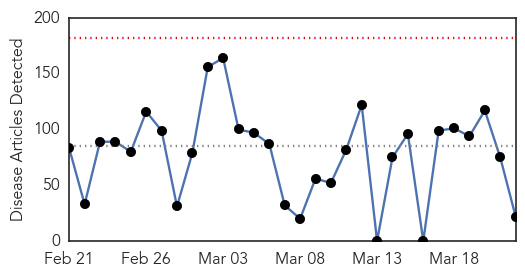
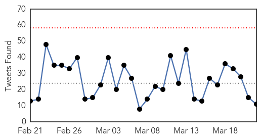
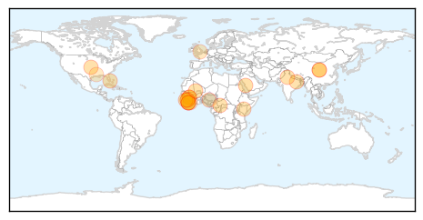
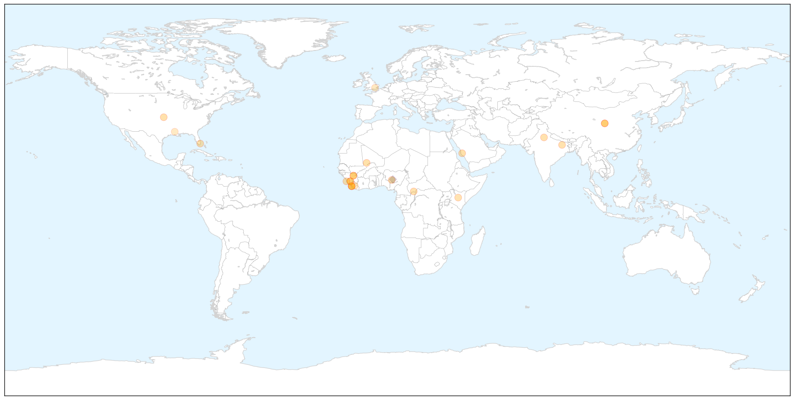
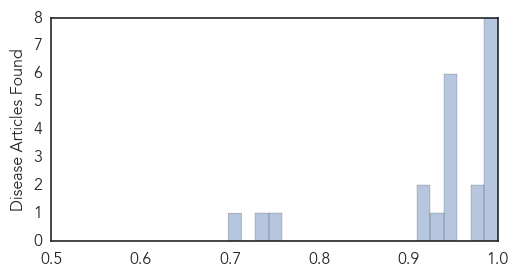

Ebola
30-Day Web Trend
0 alerts, 0 warnings

30-Day Twitter Trend
0 alerts, 0 warnings

Article Locations

X

Article Confidences
Top Articles:
- 1.000
- Emails: UN health agency resisted declaring Ebola emergency
- 1.000
- Health authorities report 3 new Ebola cases in Liberia, previously declared Ebola free
- 0.999
- Liberia Investigates How Latest Ebola Patient Got Infected
- 0.996
- The World Health Organization’s Credibility is in Question due to its Alleged Inability to Issue an Ebola Epidemic Warning on Time
- 0.996
- Timeline of China's anti-Ebola aid in Africa - Xinhua
- 0.992
- Roundup: Timeline of China's anti-Ebola aid in Africa
- 0.992
- Timeline of China's anti-Ebola aid in Africa
- 0.986
- Timeline of China's anti-Ebola aid in Africa
- 0.979
- Locals see Ebola through new eyes
- 0.973
- Sierra Leone’s President Koroma Ordered a Three-day Nationwide Lock-down Against Ebola
- 0.951
- 30,000 elderly havent got pension in East Delhi
- 0.951
- Sanjay Gupta takes break from 'Jazbaa' for son
- 0.951
- NCW concerned over delayed justice in nun gang-rape case
- 0.951
- Airport security in New Orleans shoot terminal attacker
- 0.951
- Hundreds of Indian students and teachers arrested over widespread cheating in exams
- 0.951
- Cameroon Blames CAR for Fresh Attack
- 0.925
- Communicating The Right Message About Ebola
- 0.915
- Nigerian Ebola vaccine to be launched soon – Jonathan
- 0.914
- Stamford's AmeriCares Welcomes Peterson As Senior VP
- 0.745
- Sierra Leoneans halt genital mutilation amid Ebola fears: UK minister
- 0.732
- ‘This is payback time’ – says new vice president of Sierra Leone
- 0.698
- Ebola mission accomplished
Top Tweets:
- 0.645
- Don't Be Complacent About Ebola - Forbes http://t.co/5qomO2eTEE ebola EVD
- 0.614
- Ebola containment mission almost finished for Fort Bliss soldiers - KFOX El Paso http://t.co/sVwLTPpoIz ebola EVD
- 0.551
- Why Not To Be Complacent About Ebola - Forbes http://t.co/DK6df1fu3J ebola EVD
- 0.546
- Ebola test which spots victims BEFORE they fall ill will be available within a ... - Daily Mail http://t.co/1JFVVpxESr ebola EVD
- 0.511
- RT: There is a danger that Ebola could flare up in West Africa. We must increase mass communications to prevent another cri…